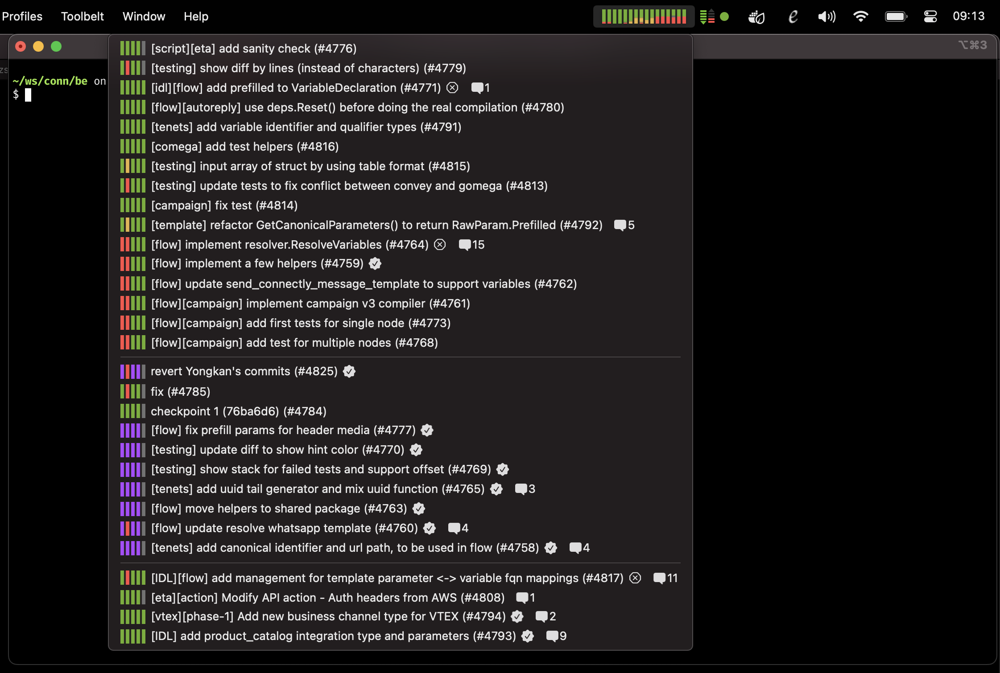
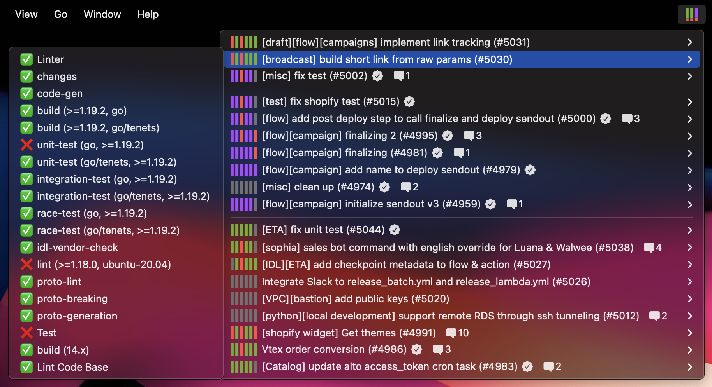

GitHub PRs on MacOS Menu Bar
I usually push a lot of PRs in form of stacked PRs to GitHub. It’s quite annoying to go through each PR to see the check status. So I created this plugin to show my PRs on the menu bar. — Now, everything is just a click away!

Features
1. Top PRs section
- List of your chosen PRs, sorted by your order.
- You can customize the list of PRs in this section by updating the file
github.swiftbar/__/.prs.txt. It contains a list of PRs that you want to show in this section. The app will try extracting PR numbers from the file, ignoring text. You can create a command to update the file automatically when you push a stacked PRs. - If you do not have any PRs in the list, it will fallback to display your most recent PRs, sorted by updated time (last 3 days for open PRs, and last 1 day for merged PRs).
2. My recent PRs section
- List of your recent PRs, sorted by number.
- Last 7 days, include both open and merged PRs.
3. Other PRs section
- List of PRs from other people, sorted by number.
- Last 7 days for all PRs with comments.
- Last 3 days for all PRs without comments. If you want to keep a PR that you find interesting up to 7 days, just add a comment to it.

4. Actions
- Click a PR to open.
- Click a check status to open.
Thanks to SwiftBar for all the hard works!
Author
I'm Oliver Nguyen. A software maker working mostly in Go and JavaScript. I enjoy learning and seeing a better version of myself each day. Occasionally spin off new open source projects. Share knowledge and thoughts during my journey. Connect with me on , , , and .